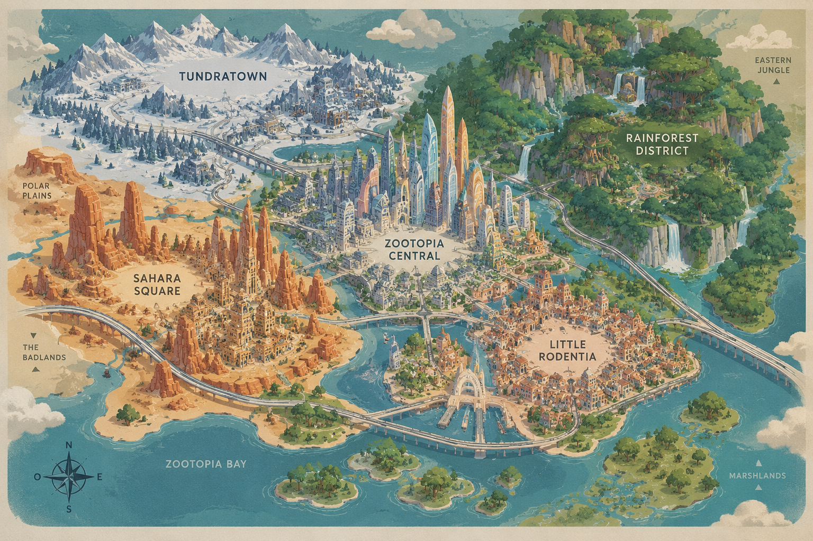

RECORRÉ LA CIUDAD
Una misma ciudad puede sentirse completamente distinta según dónde estés.
EMPEZAR A EXPLORAR ↓UNA CIUDAD, MUCHOS MUNDOS
Zootopia está formada por zonas creadas para especies muy distintas. Cambian el clima, la escala, los paisajes y hasta la manera en que se vive cada rincón.
CLIMAS DIFERENTES
ESCALAS ÚNICAS
UN MISMO MAPA
ELEGÍ TU PRÓXIMA PARADA
UNA CIUDAD HECHA A MEDIDA
TODO CONECTADO

Mové el cursor sobre los puntos.
SEGUÍ RECORRIENDO